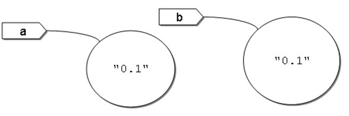
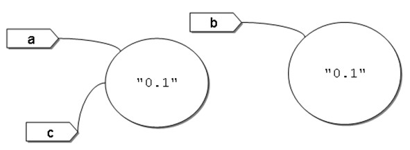

使用 Scanner、BigDecimal
May 24, 2022Java SE 提供了標準 API，這些 API 就是由許多類別組成，你可以直接取用這些標準類別，省去你撰寫程式時重新打造輪子的需求。底下來舉兩個基本的標準類別：java.util.Scanner 與 java.math.BigDecimal。
使用 Scanner
如果要在文字模式下取得使用者輸入，基本上可以使用 System.in 物件上的 read 方法，不過這個方法是以 int 型態傳回讀入的字元編碼。想想，如果你輸入了一個 '9' 字元，使用 System.in.read 的話，就還得自己將 '9' 字元轉換為整數 9，當然是不方便，實際上，System.in.read 這類的方法，是作為底層 API 使用，開發者會在上頭依需求施予更高層次的封裝。
java.util.Scanner 就是這類的封裝，底下直接以實際範例來說明：
package cc.openhome;
import java.util.Scanner;
public class Guess {
public static void main(String[] args) {
var console = new Scanner(System.in);
var number = (int) (Math.random() * 10);
var guess = -1;
do {
System.out.print("猜數字（0 ~ 9）:");
guess = console.nextInt();
} while(guess != number);
System.out.println("猜中了...XD");
}
}
由於不想每次都鍵入 java.util.Scanner，一開始就使用 import 告訴編譯器，如此之後就只要鍵入 Scanner 就可以了。
在建立 Scanner 實例時，必須傳入 java.io.InputStream 的實例，之後介紹到輸入輸出串流時會知道，System.in 就是一種 InputStream。
接下來要什麼資料，就跟 Scanner 物件要就可以了，正如其名，Scanner 實例會幫你掃描標準輸入，看看使用者有無輸入字元，怎麼掃描你就不用管了。
Scanner 的 nextInt 方法會看看標準輸入中，有沒有輸入下一個字串（以空白或換行為區隔），有的話會嘗試將之剖析為 int 型態，Scanner 對每個基本型態，都會有個對應的 nextXXX 方法，例如 nextByte、nextShort、nextLong、nextFloat、nextDouble、nextBoolean 等，如果直接取得上一個字串（以空白或換行為區隔），則使用 next，如果想取得使用者輸入的整行文字，則使用 nextLine（以換行為區隔）。
慣例上，套件名稱為 java 開頭的類別，表示標準類別。
使用 BigDecimal
知道在 Java 中執行 1.0 – 0.8 的結果是多少嗎？答案不是 0.2，而是 0.19999999999999996！為什麼？這是 Java的臭蟲（Bug）嗎？不！不是的！你使用別的程式語言（例如 JavaScript、Python 等）也有可能是顯示這個結果。
簡單來說，Java（包括其它程式語言）遵合 IEEE 754 浮點數演算（Floating-point arithmetic）規範，使用分數與指數來表示浮點數。例如 0.5 會使用 1/2 來表示，0.75 會使用 1/2 + 1/4 來表示，0.875 會使用 1/2 + 1/4 + 1/8 來表示，而 0.1 會使用 1/16 + 1/32 + 1/256 + 1/512 +1/4096 + 1/8192 + …無限循環下去，無法精確表示，因而造成運算上的誤差。
再來舉個例子，你覺得以下程式片段會顯示什麼結果？
var a = 0.1;
var b = 0.1;
var c = 0.1;
if((a + b + c) == 0.3) {
System.out.println("等於 0.3");
}
else {
System.out.println("不等於 0.3");
}
由於浮點數誤差的關係，結果是顯示「不等於 0.3」！類似的例子還很多，結論就是，如果要求精確度，那就要小心使用浮點數，而且別用 == 直接比較浮點數運算結果。
要怎麼辦得到更好的精確度？可以使用 java.math.BigDecimal 類別，以方才的 1.0 – 0.8 為例，如何得到 0.2 的結果？直接使用程式來示範：
package cc.openhome;
import java.math.BigDecimal;
public class DecimalDemo {
public static void main(String[] args) {
var operand1 = new BigDecimal("1.0");
var operand2 = new BigDecimal("0.8");
var result = operand1.subtract(operand2);
System.out.println(result);
}
}
建構 BigDecimal 的方法之一是使用字串，BigDecmial 在建構時會剖析傳入字串，以預設精度進行接下來的運算，BigDecimal 提供有 plus、substract、multiply、divide 等方法，可以進行加、減、乘、除等運算，這些方法都會傳回代表運算結果的 BigDecimal。
上面這個範例可以顯示出 0.2 的結果，再來看利用 BigDecimal 比較相等的例子：
package cc.openhome;
import java.math.BigDecimal;
public class DecimalDemo2 {
public static void main(String[] args) {
var op1 = new BigDecimal("0.1");
var op2 = new BigDecimal("0.1");
var op3 = new BigDecimal("0.1");
var result = new BigDecimal("0.3");
if(op1.add(op2).add(op3).equals(result)) {
System.out.println("等於 0.3");
}
else {
System.out.println("不等於 0.3");
}
}
}
由於 BigDecimal 的 add 等方法都會傳回代表運算結果的 BigDecmial，所以就直接利用傳回的 BigDecimal 再呼叫 add 方法，最後再呼叫 equals 比較兩個 BigDecimal 實質上是否相同，所以有了 op1.add(op2).add(op3).equals(result) 的寫法。
物件指定與相等性
比較兩個 BigDecimal 是否相等，是使用 equals 方法而非使用 == 運算子，為什麼？Java 中並非全部都是物件，Java 有兩大型態系統，基本型態與類別型態。
當 = 用於基本型態時，是將值複製給變數，== 用於基本型態時，是比較兩個變數儲存的值是否相同，這對初學者來說沒有問題，所以底下的程式片段會顯示兩個 true，因為 a 與 b 儲存的值都是 10，而 a 與 c 儲存的值也都是 10：
var a = 10;
var b = 10;
var c = a;
System.out.println(a == b);
System.out.println(a == c);
如果你在操作物件，= 是用在指定參考名稱參考某個物件，而 == 是用在比較兩個參考名稱是否參考同一物件。白話來說，= 是用在將某個名牌綁到某個物件，而 == 是用在比較兩個名牌是否綁到同一物件。來看個範例：
var a = new BigDecimal("0.1");
var b = new BigDecimal("0.1");
System.out.println(a == b); // 顯示 false
System.out.println(a.equals(b)); // 顯示 true
上面的程式片段，以繪圖方式表示的話，以第一行為例，看到 new 關鍵字，就是建立物件，那就畫個圓圈表示物件，這個物件內含 "0.1"，並建立一個名牌 a 綁到這個新建立的物件，所以第一行與第二行執行後，可用以下的圖來表示：

程式中使用 a == b，就是在問，a 牌子綁的物件是否就是 b 牌子綁的物件？答案「不是」，也就是 false 的結果，程式中使用 a.equals(b)，就是在問，a 牌子綁的物件與 b 牌子綁的物件，實際上內含值是否相同，因為 a 與 b 綁的物件，內含值都是 "0.1" 代表的數值，答案「是」，也就是 true 的結果。
再來看一個例子：
var a = new BigDecimal("0.1");
var b = new BigDecimal("0.1");
var c = a;
System.out.println(a == b); // 顯示 false
System.out.println(a == c); // 顯示 true
System.out.println(a.equals(b)); // 顯示 true
這個程式片段若執行至第三行 c = a，表示將 a 牌子綁的物件，也給 c 牌子來綁，用圖表示就是：

所以問到 a == b，就是在問 a 與 b 是否綁在同一物件？結果就是 false，問到 a == c，就是在問 a 與 c 是否綁在同一物件？結果就是 true，問到 a.equals(b)，就是在問 a 與 b 綁的物件實際上內含值是否相同？結果就是 true。
== 用在物件型態，是比較兩個名稱是否參考同一物件，而 != 正好相反，是比較兩個名稱是否沒參考同一物件。實際上，equals 可以自行定義如何比較兩物件的內含值，之後會說明。